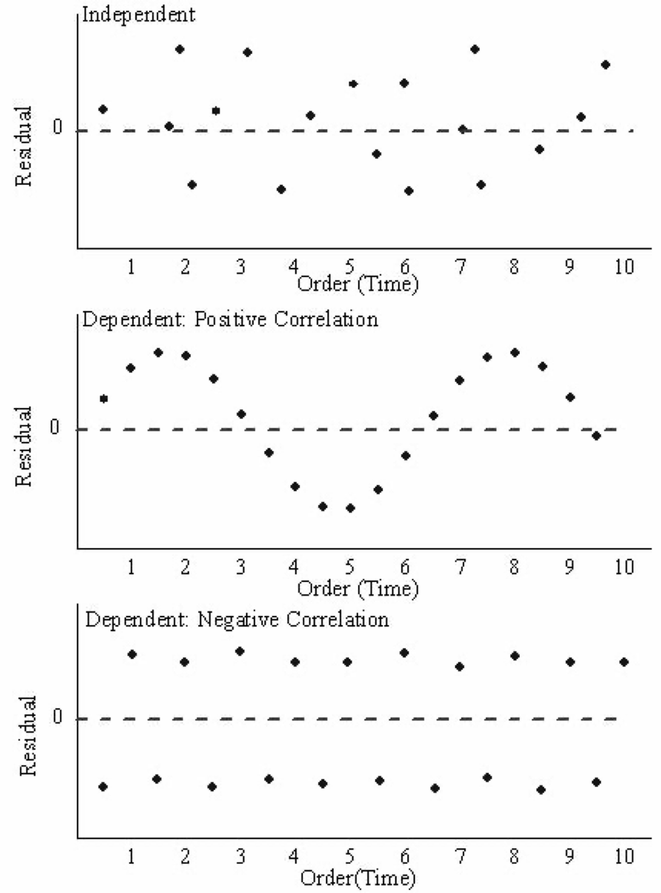

\(X_{ij}\) is the i-th observation of the j-th predictor.
\(Y_{i}\) is the i-th observation of the response.
\(\epsilon_i\) is the i-th random error.
Assumptions
The error \(\epsilon_i\)’s must then satisfy the following assumptions:
On average, they are close to zero for any value of the predictors \(X_j\).
For any value of the predictor \(X_j\), the dispersion or variance is constant and equal to \(\sigma^2\).
The \(\epsilon_i\)’s are all independent from each other.
The \(\epsilon_i\)’s follow normal distribution with mean 0 and variance \(\sigma^2\).
Residuals
The errors \(\epsilon_1, \ldots, \epsilon_n\) are not observed. To overcome this issue, we use the residuals of our model.
Suppose that the multiple linear regression model is correct and consider the fitted responses \(\hat{y}_i = \hat{\beta}_0 + \hat{\beta}_1 X_{i1} + \cdots + \hat{\beta}_p X_{ip}\), where \(\hat{\beta}_{j}\) is the least squares estimator for the j-th predictor.
We define the residual residuals\(\hat{\epsilon}_i = y_i - \hat{y}_i\), \(i = 1, \ldots, n.\)
If the model structure is correctly specified and assuming that the least-squares estimates \(\hat{\beta}_j\)’s are close to the true \(\beta_j\)’s, respectively, we have that
So, the residuals \(\hat{\epsilon}_i\) should resemble the random errors \(\epsilon\).
To evaluate the assumption of a (simple and) multiple linear regression model, we use a Residual analysis.
Residual Analysis
To check the validity of these assumptions, we will follow a graphical approach. Specifically, we will construct three informative plots of the residuals.
Residuals vs Fitted Values Plot. To assess the structure of the model and check for constant variance
Residuals Vs Time Plot. To check independence.
Normal Quantile-Quantile Plot. To assess if the residuals follow a normal distribution
Example
This example is inspired by Foster, Stine and Waterman (1997, pages 191–199).
The data are in the form of the time taken (in minutes) for a production run, \(Y\), and the number of items produced, \(X\), for 20 randomly selected orders as supervised by a manager.
We wish to develop an equation to model the relationship between the run time (\(Y\)) and the run size (\(X\)).
Recall that we can calculate the predicted values and residuals using commands from statsmodels.
# Defining the predictor (X) and the response variable (Y).prod_Y_train = production_data['RunTime']prod_X_pred = production_data['RunSize']prod_X_train = sm.add_constant(prod_X_pred)# Fitting the simple linear regression model.regr = sm.OLS(prod_Y_train, prod_X_train)linear_model = regr.fit()# Make predictions using the the modelprod_Y_pred = linear_model.fittedvalues# Calculate residuals.residuals = linear_model.resid
Residuals vs Fitted Values
Code
# Residual vs Fitted Values Plotplt.figure(figsize=(5, 5))sns.scatterplot(x = prod_Y_train, y = residuals)plt.axhline(y=0, color='red', linestyle='--')plt.title('Residuals vs Fitted Values')plt.xlabel('Predicted Values')plt.ylabel('Residuals')plt.show()
If there is a trend, the model is misspecified.
A “funnel” shape indicates that the assumption of constant variance is not met.
Examples of plots that do not support the conclusion of constant variance.
Another example.
The phenomenon of non-constant variance is called heteroscedasticity
Residuals vs Time Plot
By “time,” we mean that time the observation was taken or the order in which it was taken. The plot should not show any structure or pattern in the residuals.
Dependence on time is a common source of lack of independence, but other plots might also detect lack of independence.
Ideally, we plot the residuals versus each variable of interest we could think of, either included or excluded in the model.
Assessing the assumption of independence is hard in practice.
Code
# Residuals vs Time (Case) Plotplt.figure(figsize=(7, 5))sns.scatterplot(x = production_data['Case'], y = residuals)plt.axhline(y=0, color='red', linestyle='--')plt.title('Residuals vs Time (Case)')plt.xlabel('Case')plt.ylabel('Residuals')plt.show()
Example of plot that do not support the independence assumption.

Checking for normality
This assumption is generally checked by looking at the distribution of the residuals.
Two plots:
Histogram.
Normal Quantile-Quantile Plot (also called normal probability plot).
Histogram
Ideally, the histogram resembles a normal distribution around 0. If the number of observations is small, the histogram may not be an effective visualization.
Code
# Histogram of residualsplt.figure(figsize=(5, 3))sns.histplot(residuals)plt.title('Histogram of Residuals')plt.xlabel('Residuals')plt.show()
Normal Quantile-Quantile (QQ) Plot
A normal QQ plot is helpful for deciding whether a sample was drawn from a distribution that is approximately normal.
First, let \(\hat{\epsilon}_{[1]}, \hat{\epsilon}_{[2]}, \ldots, \hat{\epsilon}_{[n]}\) be the residuals ranked in an increasing order, where \(\hat{\epsilon}_{[1]}\) is the minimum and \(\hat{\epsilon}_{[n]}\) is the maximum. These points define the sample percentiles (or quantiles) of the distribution of the residuals.
Next, calculate the theoretical percentiles of a (standard) Normal distribution calculated using Python.
The normal QQ plot displays the (sample) percentiles of the residuals versus the quantiles of a normal distribution.
If these quantiles agree with each other, then they would approximate a straight line.
The straight line is usually determined visually, with emphasis on the central values rather than the extremes.
For a nice explanation, see this YouTube video
QQ plot in python
To construct a QQ plot, we use the function qqplot()statsmodels library.
# QQ plot to assess normality of residualsplt.figure(figsize=(5, 3))sm.qqplot(residuals, fit =True, line ='45')plt.title('QQ Plot of Residuals')plt.show()
<Figure size 480x288 with 0 Axes>
<Figure size 384x384 with 0 Axes>
Substantial departures from a straight line indicate that the distribution is not normal.
This plot suggests that the residuals are consistent with a Normal curve.
Comments
These data are truly Normally distributed. But note that we still see deviations. These are entirely due to chance.
When n is relatively small, you tend to see deviations, particularly in the tails.
Normal probability plots for data sets following various distributions. 100 observations in each data set.
Consequences of faulty assumptions
If the model structure is incorrect, then the estimated coefficients \(\hat{\beta}_j\) will be biased and the predictions \(\hat{y}_i\) will be inaccurate.
If the residuals do not follow a normal distribution, then we have two cases:
If sample size is large, we still get accurate p-values for the t-tests for the coefficients thanks to the Central Limit Theorem.
However, the t-tests and all inference tools are invalidated.
If the residuals do not have constant variance, then the linear model is incorrect and everything falls apart!
If the residuals are dependent, then the linear model is incorrect and everything falls apart!
Inference about individual \(\beta\)’s using t-tests
The two cultures of statistical models
Inference: develop a model that fits the data well. Then make inferences about the data-generating process based on the structure of such model.
Prediction: Silent about the underlying mechanism generating the data and allow for many predictive algorithms, which only care about accuracy of predictions.
They overlap very often.
The least squares estimators \(\hat{\beta}_0, \hat{\beta}_1, \ldots, \hat{\beta}_p\) are subject to uncertainty, since they are calculated based on a random sample of data.
Therefore, assessing the amount of the uncertainty in these estimators is important. To this end, we use hypothesis tests on individual coefficients.
Hypothesis test
A statistical hypothesis is a statement about the coefficients of a model.
We like this statistic because it follows a well-known distribution.
If the null hypothesis (\(H_0: \beta_j = 0\)) is true, the statistic \(T\) follows a \(t\) distribution with \(n-p-1\) degrees of freedom
(\(n\) is the number of observations and \(p\) the number of predictors).
t distribution
This distribution is also known as the student’s t-distribution.
It was invented by William Gosset when he worked at the Guinness Brewery in Ireland.
It has one parameter \(\nu\) which generally equals a number of degrees of freedom.
The parameter \(\nu\) controls the shape of the distribution.
The t-distribution resembles a standard normal distribution when \(\nu\) goes to infinity.
Step 3. Calculate the p-value
The p-value is the probability that the test statistic \(T\) will take on a value that is at least as extreme as the observed value of the statistic when the null hypothesis (\(H_0\)) is true.
For example, consider a t-distribution with 18 degrees of freedom and an observed value of the statistic \(t_0 = -2.20\).
We sketch the critical region for \(t_{18}\), with \(\alpha = 0.05\).
Decision
The smaller the p-value, the stronger the evidence is against the null hypothesis \(H_0: \beta_j = 0\).
If the p-value is sufficiently small, we may be willing to abandon our assumption that \(H_0\) is true and reject it!
What is a small p-value?
For a significance level of \(\alpha = 0.05\)
If the p-value is smaller than \(\alpha\), we reject \(H_0: \beta_j = 0\).
If the p-value is larger than \(\alpha\), we fail to reject \(H_0\).
No scientific basis for this advice. In practice, report the p-value and explore the data using descriptive statistics.
RSS is the sum of squares due to residuals of the linear regression model; or, residual variation left unexplained by this model.
The better the predictions of the model, the smaller the RSS value.
Coefficient of determination
\[R^2 = 1 - \frac{RSS}{SS_{total}}\]
\(R^2\) measures the “proportion of variation in the response explained by the full regression model.”
\[R^2 = 1 - \frac{RSS}{SS_{total}}\]
What would you conclude about RSS if \(R^2 = 1\)?
In this case, \(RSS = 0\) and the model fits the data perfectly.
If \(R^2\) is small, then large RSS: lots of scatter and the model’s fit is not good.
It turns out that \(R^2\) is the square of the correlation between the observed response and predictor values.
Remarks on \(R^2\)
The statistic \(R^2\) should be used with caution because it is always possible to make it unity by simply adding more and more predictors (relevant for multiple linear regression).
If \(R^2\) is large, it does not necessarily imply that the full model will provide accurate predictions of future observations.
Adjusted \(R^2\) statistic
Adjusted \(R^2\) is a better measure to decide whether to add a new variable into the model or not. It is:
As we explain more variability, the numerator gets smaller and adjusted \(R^2\) gets closer to 1. So, we want to make the numerator small.
If we add a “good” variable to the model, RSS will go down. However, \(n - k - 1\) will decrease a little bit (because k is now bigger by 1.) So the numerator does not go down by as much as it does in ‘plain’ \(R^2\).
If we add a noise variable, RSS goes down a tiny bit, but because we divide by \(n - k - 1\), the numerator might actually get bigger or change very little.
So adjusted \(R^2\) is a better measure of whether adding a new variable is an improvement. If adjusted \(R^2\) goes down or stays the same, then new variable is irrelevant. If it goes up, then it probably useful.
In python
To show the \(R^2\) value, we use the rsquared argument of the linear_model object.
print( round(linear_model.rsquared, 2) )
0.73
To show the adjusted \(R^2\) value, we use the rsquared argument of the estimated_model object.
print( round(linear_model.rsquared_adj, 2) )
0.72
Model building
Model building refers to a set of techniques to reduce the full model to one that only includes significant predictors.
Note that it is more a deconstruction than building an actual model. This is because the full model must be a valid one to begin with. Specifically, the full model must provide residuals that satisfy all the assumptions (1)-(4).
After we have obtained a satisfactory full model, we can start the model building process.
Some model building techniques
Adjusted \(R^2\) statistic. We add one variable at a time and see the change in adjusted \(R^2\) statistic. If the value decreases, then we stop and evaluate the resulting model.
T-tests on the individual coefficients. If \(H_0\) is not rejected, this indicates that the predictor \(X_j\) can be deleted from the model. We can then delete the predictor and refit the model. We can repeat this process several times until we reach a model in which all variables are significant.


Comments
These data are truly Normally distributed. But note that we still see deviations. These are entirely due to chance.
When n is relatively small, you tend to see deviations, particularly in the tails.